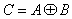
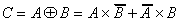

Audio
AudioEXCLUSIVE SUM (XOR)
The logic exclusive sum is expressed by the link: C is true if and only if one of the variables, either A or B is true.
The corresponding function is:

The function XOR can be expressed in terms of AND OR and NOT as follows:
